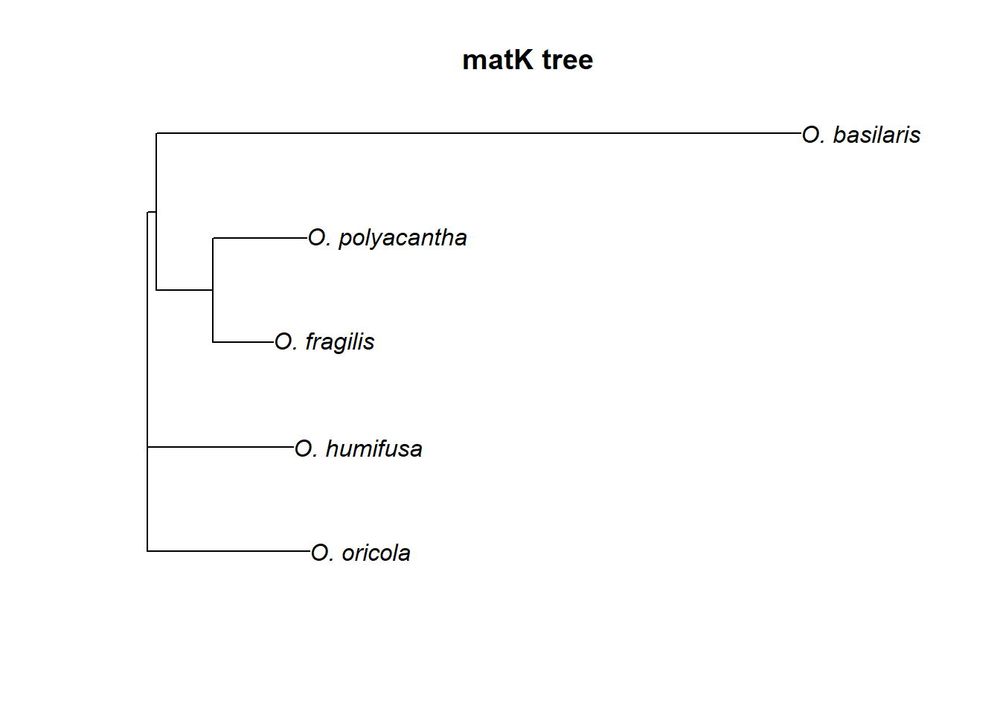
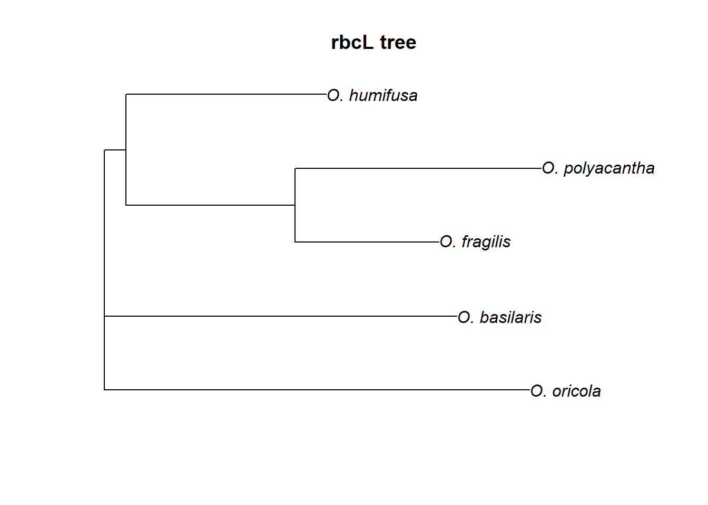
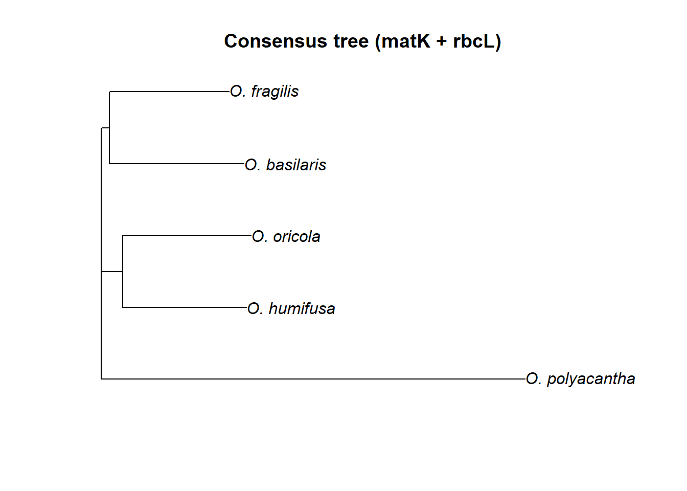

R Assignment 4: Creating Phylogenetic Trees using Genbank data
Mannfred Boehm
10 August, 2020
Motivation
Phylogenetics is one of the most important and controversial fields within plant taxonomy. The ability to sequence and compare plant DNA has split, grouped, and uncovered taxa in ways never expected. In modern plant taxonomy, phylogenetic relationships are a key piece of evidence to consider when delimiting species. In this lab, we’ll be downloading and aligning DNA sequences from five species of Opuntia. Using these sequences, we’ll construct a phylogenetic tree and consider how the species relationships hold up to the published literature.
Prerequisites
Before starting this week’s tutorial you will have:
completed some pre-assignment reading on DNA barcoding, multiple sequence alignment, phylogenetics, and their role in plant taxonomy,
completed some pre-assignment reading on why/how Genbank is used by plant taxonomists,
navigated through the Genbank website and understand what it is and why it exists.
MB Get students to read (for example, something like) Majure et al (2012), Am. J. Bot. if we end up using Opuntia as an example…
Outcomes
By the end of this tutorial you will have:
experience using Genbank, CLUSTAL, and the most common phylogenetics packages in R
familiarity with Genbank and the types of data that can be obtained,
the tools and knowledge needed to create your own phylogenetic tree as part of a taxonomic research project,
Activity 1: Downloading, Aligning, and Graphing DNA Sequences from Genbank
In previous Assignments we familiarized ourselves with GBIF, R, and the R packages that allow us to connect to databases. Today, we’ll learn how to use our newfound R skills to download and align nucleotide sequences from GenBank, a repository of DNA sequences hosted by the U.S. National Center for Biotechnology Information (NCBI). We’ll then use the aligned sequences to create a phylogenetic tree that will organize species based on their relatedness.
In this lab, we’ll explore further the genus Opuntia:
Opuntia basilaris (Mojave Desert, Colorado, Utah) Opuntia fragilis (Northwestern) Opuntia humifusa (Eastern) Opuntia oricola (Coastal sage and chaparral of S. California) Opuntia polyacantha (Great Plains, foothills of Rocky Mountains)
MB Could add in some natural history background to better motivate this activity.
As usual, we’ll start by installing the necessary packages using install.packages():
Then we’ll attach some packages designed specifically for connecting with the Genbank database (ape), filtering and organizing our data (tidyverse), aligning sequences (msa), concatenating sequences (seqinr), and constructing phylogenetic trees (ape):
## here() starts at C:/Users/mannfred/Google Drive/UBC Botany/Archive/UBC_Course_Work/PlantTaxonomy## Loading required package: Biostrings## Loading required package: BiocGenerics## Loading required package: parallel##
## Attaching package: 'BiocGenerics'## The following objects are masked from 'package:parallel':
##
## clusterApply, clusterApplyLB, clusterCall, clusterEvalQ,
## clusterExport, clusterMap, parApply, parCapply, parLapply,
## parLapplyLB, parRapply, parSapply, parSapplyLB## The following objects are masked from 'package:stats':
##
## IQR, mad, sd, var, xtabs## The following objects are masked from 'package:base':
##
## anyDuplicated, append, as.data.frame, basename, cbind, colnames,
## dirname, do.call, duplicated, eval, evalq, Filter, Find, get, grep,
## grepl, intersect, is.unsorted, lapply, Map, mapply, match, mget,
## order, paste, pmax, pmax.int, pmin, pmin.int, Position, rank,
## rbind, Reduce, rownames, sapply, setdiff, sort, table, tapply,
## union, unique, unsplit, which, which.max, which.min## Loading required package: S4Vectors## Loading required package: stats4##
## Attaching package: 'S4Vectors'## The following object is masked from 'package:base':
##
## expand.grid## Loading required package: IRanges##
## Attaching package: 'IRanges'## The following object is masked from 'package:grDevices':
##
## windows## Loading required package: XVector##
## Attaching package: 'Biostrings'## The following object is masked from 'package:ape':
##
## complement## The following object is masked from 'package:base':
##
## strsplit##
## Attaching package: 'seqinr'## The following object is masked from 'package:Biostrings':
##
## translate## The following objects are masked from 'package:ape':
##
## as.alignment, consensus## -- Attaching packages --------------------------------------- tidyverse 1.3.0 --## v ggplot2 3.3.0 v purrr 0.3.4
## v tibble 3.0.0 v dplyr 0.8.5
## v tidyr 1.0.2 v stringr 1.4.0
## v readr 1.3.1 v forcats 0.5.0## -- Conflicts ------------------------------------------ tidyverse_conflicts() --
## x dplyr::collapse() masks Biostrings::collapse(), IRanges::collapse()
## x dplyr::combine() masks BiocGenerics::combine()
## x purrr::compact() masks XVector::compact()
## x dplyr::count() masks seqinr::count()
## x dplyr::desc() masks IRanges::desc()
## x tidyr::expand() masks S4Vectors::expand()
## x dplyr::filter() masks stats::filter()
## x dplyr::first() masks S4Vectors::first()
## x dplyr::lag() masks stats::lag()
## x ggplot2::Position() masks BiocGenerics::Position(), base::Position()
## x purrr::reduce() masks IRanges::reduce()
## x dplyr::rename() masks S4Vectors::rename()
## x dplyr::slice() masks XVector::slice(), IRanges::slice()First, we’re going to build a spreadsheet that will help us keep track of our Opuntia species and the GenBank accession codes for both the matK and rbcL genes for each species. The accession numbers were found by searching the GenBank website like so:

Figure 1: Searching Genbank for accession numbers.
Once the accession numbers are found, they can be saved in a data frame:
# build data frame
# accession numbers found by searching GenBank
species <- c('O. basilaris', 'O. fragilis', 'O. humifusa', 'O. oricola', 'O. polyacantha')
matK_acc <- c('JF786750.1', 'JF786786.1', 'JF786791.1', 'JF786812.1', 'JF786823.1')
rbcL_acc <- c('JF787189.1', 'JF787223.1', 'JF787227.1', 'JF787249.1', 'JF787259.1')
df <- data.frame(species, matK_acc, rbcL_acc)Now we’re ready to search and download the matK sequence for each Opuntia species, using the read.Genbank() function:
# call GenBank
matK <-
read.GenBank(
df$matK_acc,
species.names = FALSE,
as.character = TRUE) %>%
lapply(., paste0,collapse="") %>% # remove spaces
lapply(., str_to_upper) # capitalize
# replace Accession IDs with English names
names(matK) <- df$speciesWe can inspect the DNA sequence for O. basilaris by running:
## [1] "TCAATATTTCCCTTTTTCGAGGACAAATTCTTACATTTAAATTATGTGTTAAAAATATTAATACCTTACCCCATTCATCTAGAAATCTTGGTTCAAACTCTTCGTTACTGGGTGAAAGATGCTTCTTCTTTGCATTTATTACGATTCTTTCTTTATGAGTATCGTAATTGGAATAGTCTTATTACTCCCCAAAAATCCATTTCTATTTTTTCAAAAAAGAATCAACGATTATTCTTGTTCCTATATAATTTCCATGTATGTGAATACGAATCCATTTTCGTTTTTCTCTGTAACCAATCCTCTCATTTACGATCTTTTACTTTTGGAGCCCTTCTTGAACGAATCTATTTTTATGGAAAGCGTGAATATCTAGTAAAAGTAAAAACTTTATCTAAGGATTTTCGTCTTATCTTATGGCTTTTCAAAGACCCTTTCCTGCATTATGAATTGTATCGAGGAAAAGAAATTCTGGCTTCAAAGGGGACATCTCTTCTGATGCATAAATGGAAATATTATCTTAACAATTTTTGGCAATGCCATTTTTCCCTGTGGTCTCAACCAAGAAGAATCTATATCAATCGATTATCAAAGCATTCTCTCGACTTTATGAGTTTTTTTTCAAGTGTTCGACTCAATTCTTCAGTGGTACGGAGTCAAATGGTAGAAAATTCATTTCTAATAGATAATCCTATTAAGAAATTCGATACCATAGTTCGAATTATTCCTCTGGTTGGATCGTTGGCTAAAGCGAAATTTTGTAACGTATTAGGACATCCCGTTAGTAAGTCGGTCTGGACCGATTTATTAGATTCTGATATTATTGATCGGTTTGGGCGCATATGCAGAAATCTTTCTCATTATTATAGTGGCTCTTCAAGAAAAAAGAGTTTGTATCGAATAAAGTATATA"Cool, I feel like I’m on CSI. The code for searching and downloading the rbcL sequences is similar:
# call GenBank
rbcL <-
read.GenBank(
df$rbcL_acc,
species.names = FALSE,
as.character = TRUE) %>%
lapply(., paste0,collapse="") %>% # remove spaces
lapply(., str_to_upper) # capitalize
# replace Accession IDs with English names
names(rbcL) <- df$speciesWe now have two DNA sequence objects, matK and rbcL, that contain sequences from each of our five Opuntia species. In the next step, we’ll use the msa() function to align our five matK sequences so that their ends are lined up. You could also do this by eye, but it’s a bit tedious and not as reproducible:
# matK alignment
matK_alignment <-
msa(unlist(matK),
type ='dna',
method ='ClustalW',
verbose = TRUE)## use default substitution matrix## CLUSTAL 2.1
##
## Call:
## msa(unlist(matK), type = "dna", method = "ClustalW", verbose = TRUE)
##
## MsaDNAMultipleAlignment with 5 rows and 911 columns
## aln names
## [1] ----CATATT-CCCTTTT-CGAGGAC...GAGTTTGTATCGAATAAAGTATATA O. fragilis
## [2] ----CATATTTCCCTTTT-CGAGGAC...GAGTTTGTATCGAATAAAGTATATA O. humifusa
## [3] ---TCATATTTCCCTTTTTCGAGGAC...GAGTTTGTATCGAATAAAGTATATA O. oricola
## [4] CATCAATATTTCCCTTTTTCGAGGAC...GAGTTTGTATCGAATAAAGTATATA O. polyacantha
## [5] --TCAATATTTCCCTTTTTCGAGGAC...GAGTTTGTATCGAATAAAGTATATA O. basilaris
## Con ---?CATATTTCCCTTTTTCGAGGAC...GAGTTTGTATCGAATAAAGTATATA ConsensusBy using the print() function, we see that our sequences are aligned pretty well! You can also notice some differences in nucleotide position between the species. Those are ‘single nucleotide polymorphisms’ (SNPs) that, when considered across the entire genome, distinguish one species from another.
We’ll now align our rbcL sequences:
## use default substitution matrix## CLUSTAL 2.1
##
## Call:
## msa(unlist(rbcL), type = "dna", method = "ClustalW", verbose = TRUE)
##
## MsaDNAMultipleAlignment with 5 rows and 807 columns
## aln names
## [1] TTTTATAAAGTAAACTATGTCGAAAT...TAAAAATTTTCATCAAATTAAGAG- O. basilaris
## [2] ---------------TATGTCGAAAT...------------------------- O. humifusa
## [3] -----TAAAGTAAACTATGTCGAAAT...TAAAAATTTTCATCAAAT------- O. fragilis
## [4] --TTTTAAAGTAAACTATGTCGAAAT...TAAAAATTTTCATCAAATTAAGTTG O. polyacantha
## [5] --------------------------...------------------------- O. oricola
## Con -----TAAAGTAAACTATGTCGAAAT...TAAAAATTTTCATCAAAT------- ConsensusRecall that matK and rbcL are two separate segments of the chloroplast genome. By sticking them together, we’ll create a super-sequence that contains more information than either of the sequences alone. The more sequence information, the better, because it gives us a bigger sample of the entire genome. Concatenation is done by the seqinr package, so we’ll need to convert our alignment objects into seqinr objects:
# convert alignment object into seqinr object
matK_r <- msaConvert(matK_alignment, type="seqinr::alignment")
rbcL_r <- msaConvert(rbcL_alignment, type="seqinr::alignment")
# concatenate (merge) sequences
conseq <- mapply(paste0, matK_r$seq, rbcL_r$seq)
names(conseq) <- df$species
# re-align
con_alignment <-
msa(unlist(conseq),
type ='dna',
method ='ClustalW',
verbose = TRUE)## use default substitution matrix## CLUSTAL 2.1
##
## Call:
## msa(unlist(conseq), type = "dna", method = "ClustalW", verbose = TRUE)
##
## MsaDNAMultipleAlignment with 5 rows and 1718 columns
## aln names
## [1] ----CATATT-CCCTTTT-CGAGGAC...TAAAAATTTTCATCAAATTAAGAG- O. basilaris
## [2] ----CATATTTCCCTTTT-CGAGGAC...------------------------- O. fragilis
## [3] ---TCATATTTCCCTTTTTCGAGGAC...TAAAAATTTTCATCAAAT------- O. humifusa
## [4] CATCAATATTTCCCTTTTTCGAGGAC...TAAAAATTTTCATCAAATTAAGTTG O. oricola
## [5] --TCAATATTTCCCTTTTTCGAGGAC...------------------------- O. polyacantha
## Con ---?CATATTTCCCTTTTTCGAGGAC...TAAAAATTTTCATCAAAT------- Consensus# convert alignment object into seqinr object
con_r <- msaConvert(con_alignment, type="seqinr::alignment")We’re ready to create some phylogenetic trees! First, we’ll use the dist.alignment() function to calculate how similar or different each species’ sequence is from one another. We’ll do this for the matK, rbcL, and concatenated sequences, so that we can compare the trees:
# create distance matrices
matK_dist <- dist.alignment(matK_r)
rbcL_dist <- dist.alignment(rbcL_r)
con_dist <- dist.alignment(con_r)Now, we’ll use the nj() function to construct trees:
# neighbour joining trees
matK_tree <- nj(matK_dist)
rbcL_tree <- nj(rbcL_dist)
con_tree <- nj(con_dist)Plot your new trees:



-KNOWLEDGE CHECK- Do the trees differ? Which phylogenetic relationships have been re-arranged between trees?